Mantenimiento de Sistemas
Diagnóstico, mantenimiento preventivo y correctivo de hardware y software. Rendimiento y seguridad para tu equipo.
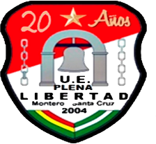
Sistemas InformáticosU.E. Plena Libertad · Montero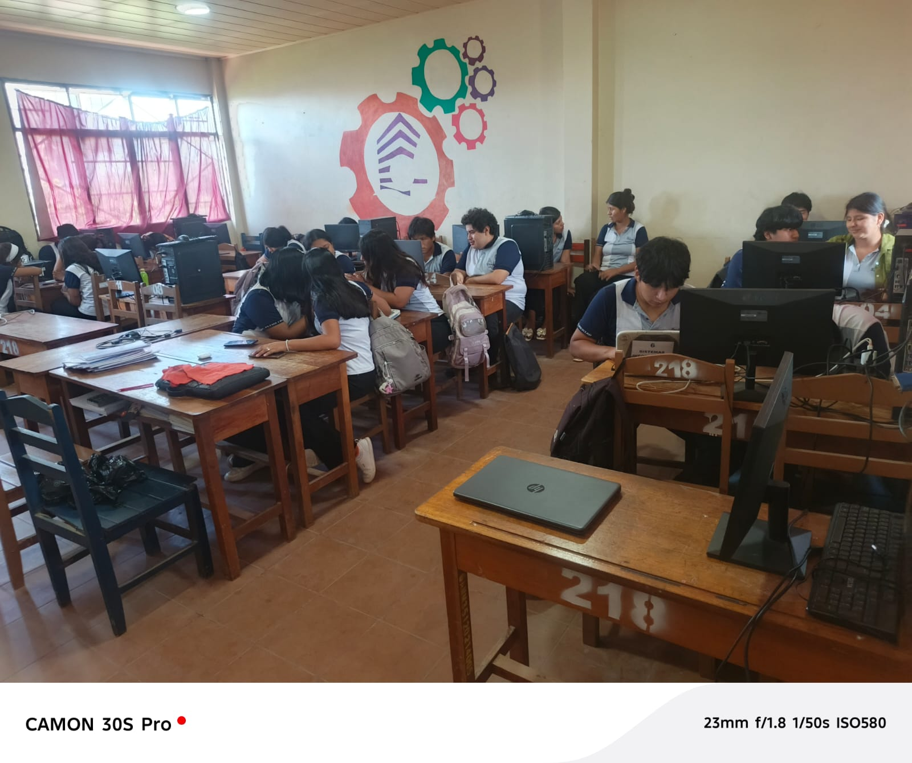
Unidad Educativa Plena “Libertad”
Innovación · Tecnología · Soluciones
Estudia un Técnico Medio junto a tu bachillerato. Aprende a reparar equipos, programar, crear páginas web y apps, instalar redes y diseñar.
const carrera = { nombre: "Sistemas Informáticos", titulo: "Técnico Medio", años: ["4.º", "5.º", "6.º"], colegio: "U.E. Plena Libertad", ciudad: "Montero, Santa Cruz", graduacion: ["Emprendimiento", "Innovación", "Práctica laboral"] };
La carrera
Formamos técnicos medios con valores sociocomunitarios y conocimientos científicos y tecnológicos sobre el hardware y el software de la computadora.
Aprendes haciendo: emprendimientos productivos y propuestas de servicio para la comunidad, cuidando el medioambiente y aportando a la reactivación económica de Bolivia.
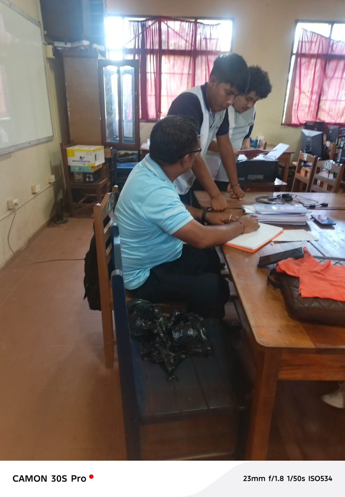
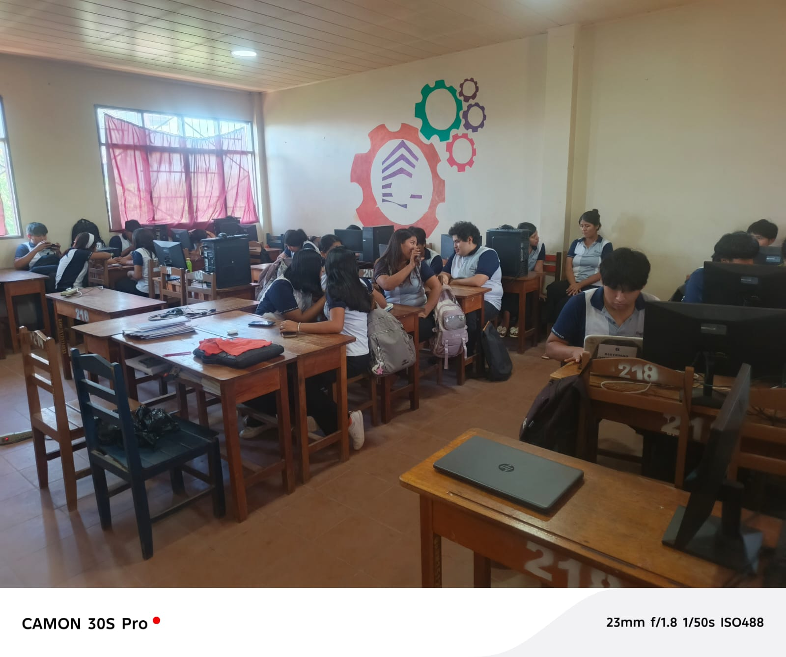
Capacidades
Seis habilidades prácticas que te acompañan al terminar la carrera y te abren puertas.
Diagnóstico, mantenimiento preventivo y correctivo de hardware y software. Rendimiento y seguridad para tu equipo.
Páginas web estáticas y dinámicas con base de datos. Soluciones modernas y personalizadas para tu comunidad.
Apps para celular que resuelven problemas reales de actividades económicas y productivas.
Algoritmos y código limpio. Soluciones reales con lenguajes de programación actuales.
Planificación e instalación de redes. Conexión estable y de alto rendimiento.
Artes gráficas y material visual digital. Diseños creativos que destacan.
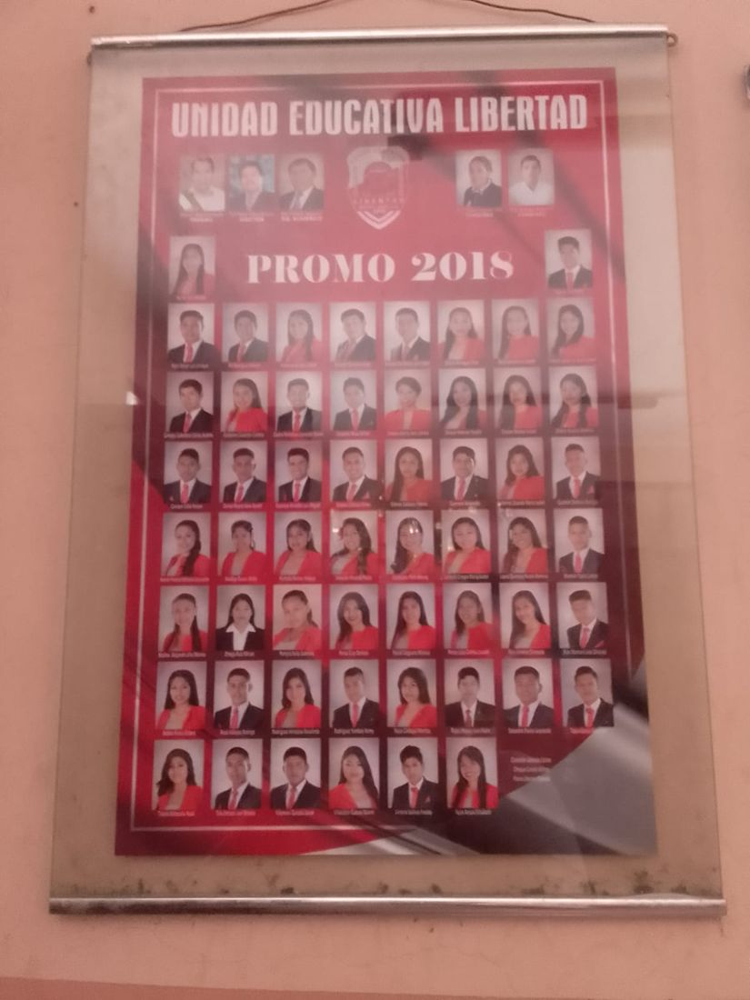
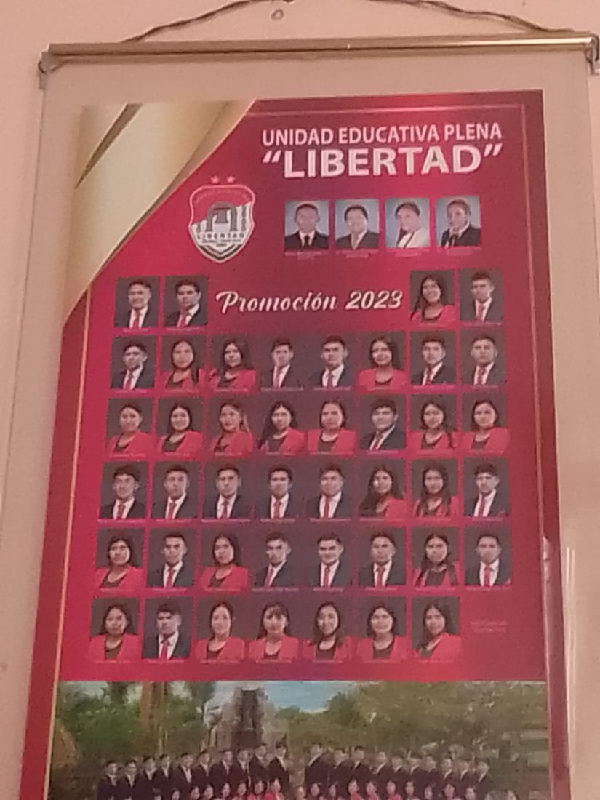
Tu ruta
Elige un año para ver qué lograrás y qué temas del plan de estudios verás.
Cierre de formación
En el Bachillerato Técnico Humanístico eliges una modalidad para cerrar tu formación.
Creas un proyecto productivo que responde a una necesidad real de tu entorno.
Propones y desarrollas una solución tecnológica nueva.
Aplicas lo aprendido trabajando directamente para la comunidad.
Instalaciones y docentes
Aulas reales, equipos y docentes del área técnica tecnológica.
Una destinada a las carreras técnicas tecnológicas (Administración de Empresas y Sistemas Informáticos) y otra para investigación e internet. También contamos con salas de técnica tecnológica con computadoras Quipus y laboratorios de Física–Química y Biología.
Formación práctica, título de Técnico Medio y un equipo docente que te acompaña.
Historia
Los afiches de los bachilleres que ya pasaron por el colegio. Desde 2018 egresan con título técnico.
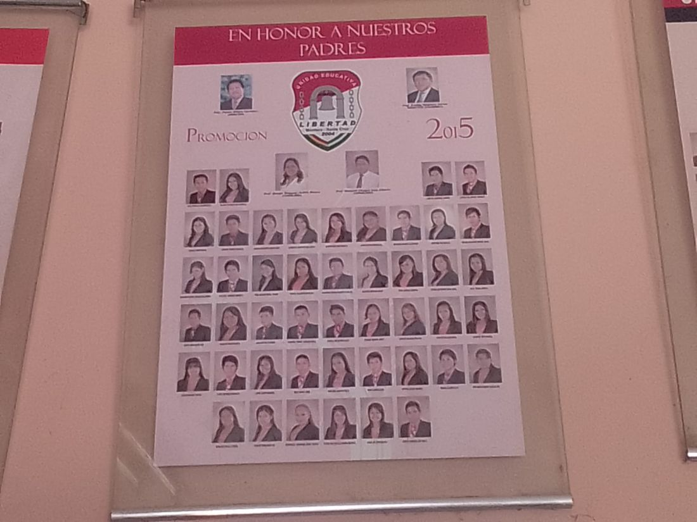
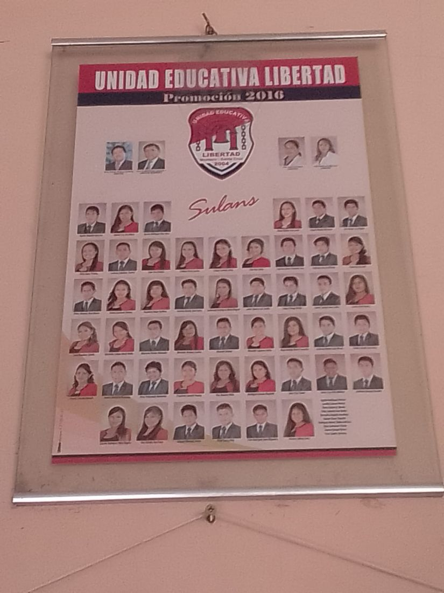
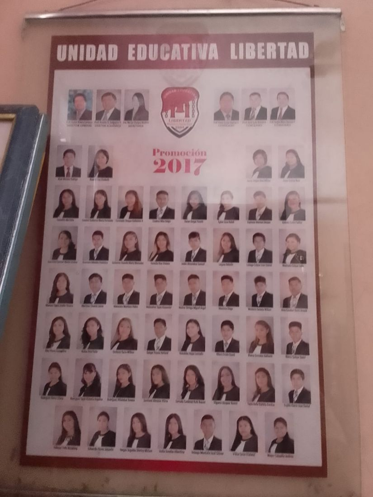
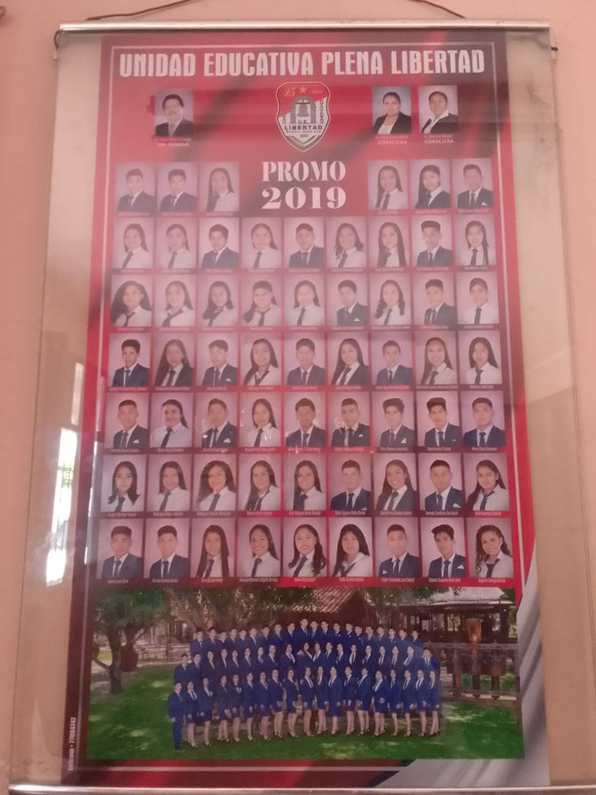
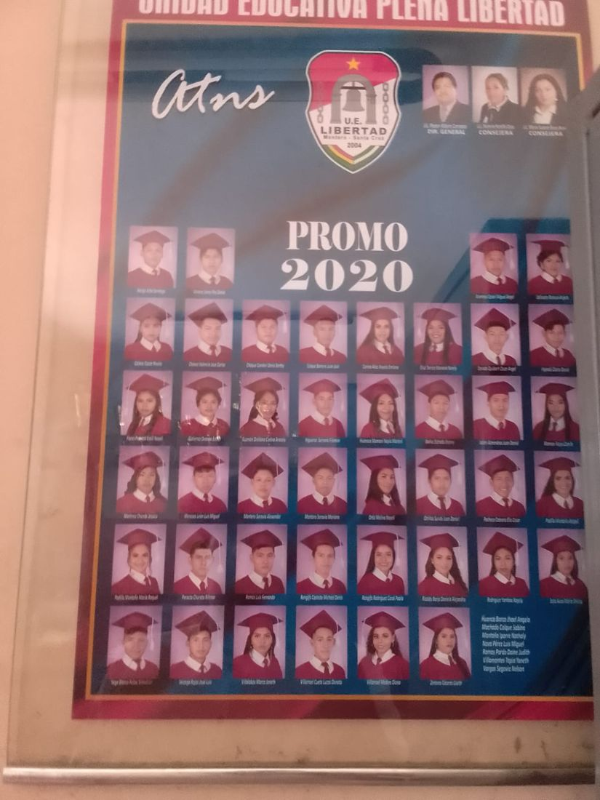
Dudas
Te titulas como Técnico Medio en Sistemas Informáticos, junto con tu título de bachiller, dentro del Bachillerato Técnico Humanístico.
La formación técnica se desarrolla en 4.º, 5.º y 6.º de secundaria.
Diseñas algoritmos para resolver problemas reales y los conviertes en programas con un lenguaje de programación.
Con un Proyecto de Emprendimiento Productivo, un Proyecto de Innovación o una Práctica Laboral Comunitaria.
Escríbenos con el formulario de contacto y te respondemos por WhatsApp. La dirección del colegio informa los requisitos y las fechas vigentes.